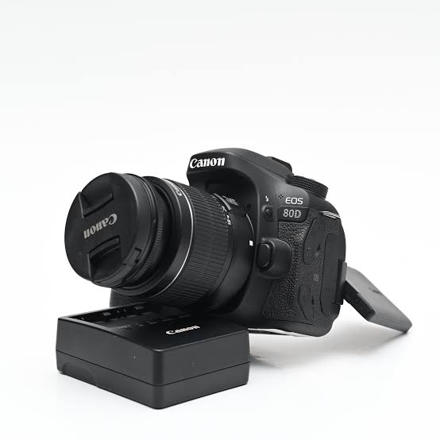
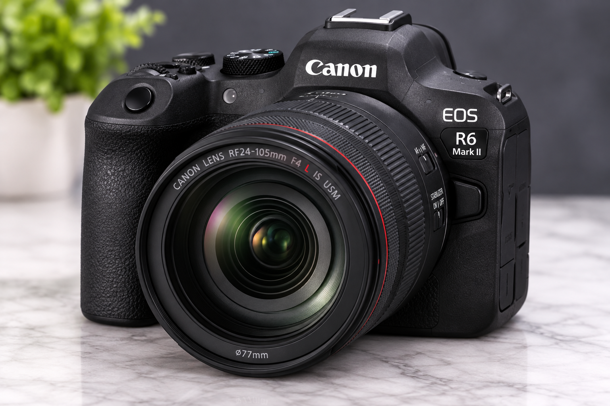
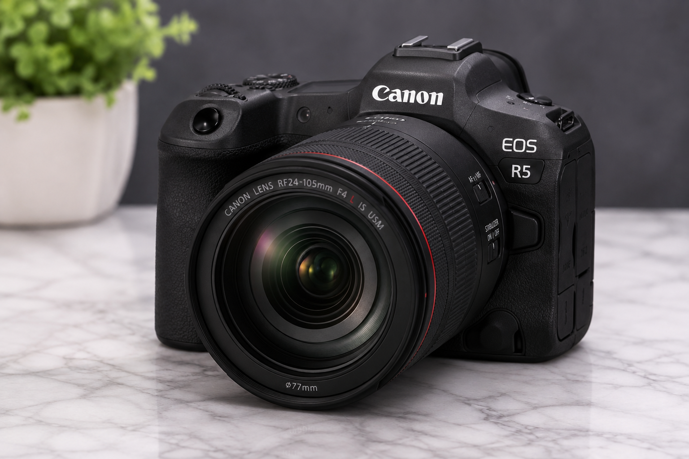

La fotografía es el arte y la técnica
de capturar imágenes utilizando una cámara. A través
de ella podemos conservar momentos importantes y
representar diferentes lugares, personas y situaciones.
Además de ser una herramienta para guardar recuerdos,
la fotografía puede utilizarse como una forma de
expresión artística y creatividad. Cada
fotógrafo puede mostrar una perspectiva diferente
de la realidad.

La cámara es una de las principales herramientas
de la fotografía.
Tipos de fotografía
Existen diferentes tipos de fotografía. Cada uno tiene
características y objetivos diferentes, dependiendo
de lo que el fotógrafo desea comunicar.
Fotografía de retrato
Fotografía de paisaje
Fotografía deportiva
Fotografía de naturaleza
Fotografía urbana
Fotografía de eventos
La fotografía de paisajes permite capturar
la belleza de la naturaleza.
Conceptos básicos de fotografía
Para obtener una buena fotografía es importante conocer
algunos conceptos básicos relacionados con la cámara,
la iluminación y la composición.
Exposición
Es la cantidad de luz que recibe el sensor de la cámara
al tomar una fotografía.
Enfoque
Permite conseguir que el sujeto principal de la imagen
aparezca definido y nítido.
Composición
Es la manera en que se organizan los elementos dentro
de una fotografía.
Iluminación
Es el uso de la luz para crear diferentes efectos
y destacar elementos de una imagen.
Modelos más destacados
Estos son algunos de los modelos más populares de la línea Canon EOS,
ideales tanto para principiantes como para fotógrafos profesionales.
Canon EOS R50
Cámara mirrorless compacta, perfecta para quienes se inician en la
fotografía y el video. Ligera, fácil de usar y con gran calidad de imagen.
precio: $799.95

Canon EOS R6 Mark II
Un modelo de gama media-alta pensado para fotografía de acción y
video profesional, con excelente rendimiento en poca luz.
precio: $2,299.00

Canon EOS R5
La opción de gama alta, con resolución de 45 megapíxeles y grabación
de video en 8K, ideal para trabajo profesional exigente.
precio: $1,299.00
Modelos Adicionales
canon EOS R7
Pensada para fotografía de naturaleza y deportes, con enfoque automático
rápido y ráfaga de alta velocidad
precio: $1,449.00
Canon EOS R8
mirrorless de gama media, ligera y compacta, con sensor de fotograma
completo, ideal para quienes buscan buena calidad sin cargar mucho peso.
precio: $1,499.00
canon EOS RP
Una de las mirrorless de fotograma completo más accesibles de canon,
ideal para dar el salto desde una cámara de nivel inicial.
precio: $999.00
canon EOS R100
El modelo más básico y económico de la línea EOS R, perfecto para
quienes recién inician en la fotografía.
precio: $479.00
Canon EOS 90D
Réflex de gama alta, con excelente autonomía de batería y buen
desempeño para fotografía deportiva y de vida silvestre.
precio: $1,199.00
Canon EOS 2000D
Réflex de entrada, económica y sencilla de usar, ideal para
quienes están aprendiendo fotografía por primera vez.